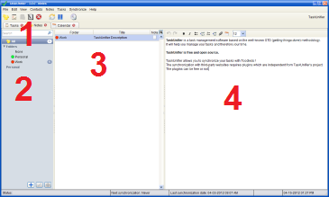

Notes

- 1. Quick search
-
You can filter your notes by title by filling in this field.
- 2. Searcher list
-
The searcher allows you to sort and filter your notes.
- 3. Note table
-
This table shows you the notes contained in the selected searcher.
You can edit your notes and copy-paste notes.
- 4. Note text
-
In this editor, you can enter the text of the selected note.
- Copy paste:
-
You can copy paste notes. Select a note, copy it and finally paste it.
- Export to Word, Excel, ...:
-
Copy the notes your want to export (select + click on copy), then paste in your preferred software.